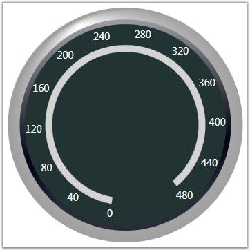

Circular Label Tick consists of many options to customize the way that the labels should be displayed. Circular label tick can be added to the circular scale by using its different properties to present the scales with meaningful labels.
Table 8: Property Table
|
Property |
Description |
|
TickStyle |
To set the tick style for which the label should be displayed. Default value is MajorTick. |
|
DistanceFromScale |
Represents the distance that need to be maintained to present the ticks from the scale. Default value is set to 0. |
|
Angle |
To set the angle rotation of ticks. Default value is set to 0. |
|
BackgroundBrush |
Used to set the background brush for ticks. Default value is Transparent. |
|
TickPlacement |
To set the placement for ticks. The options included are as follows.
Cross-draw in the middle of the scale. Inside-draw inside of the scale. Outside-draw outside of the scale.
Default value is Cross. |
|
IsLogarithmic |
Sets whether the label values should be displayed as logarithmic values. Default value is false. |
|
LogBase |
The base to which the logarithmic values should be calculated. Default value is 10. LogBase will work only if IsLogarithmic property is set to true. |
|
IsCalculateFormulaEnabled |
Sets whether any formula should be acted upon the label values of the scale. Default value is false. |
|
CalculateFormula* |
The formula to be acted upon the labels. Default value is String.Empty. CalculateFormula will work only if IsCalculateFormulaEnabled property is set to true. |
|
IsRelativeAngle |
Displays the labels relative to the angle of the scale. Default value is false. |
|
RangedBrush |
Provides an alternate brush to the ticks (apart from the brush provided by the BackgroundBrush property) for a range specified by using the RangedBrushStartValue and RangedBrushEndValue properties. |
|
RangedBrushStartValue |
Specifies the start value from which the ticks should be painted with the alternate brush stored in the RangedBrush property. Default value is set to 0. |
|
RangedBrushEndValue |
Specifies the end value upto which the ticks should be painted with the alternate brush stored in the RangedBrush property. Default value is set to 0. |
* - 'x' (in lower case) should be included in the string, assigned to the CalculateFormula property, which refers to the current label tick.
· Binary Operators supported are +,-,*,/ and %
· Unary minus ( ! ) is the only unary operator supported (should be given as '!' instead of '-')
· Operator should be included between operands.
Refer to the below code snippet for adding labels to the major tick.
|
[XAML]
<syncfusion:CircularGauge Radius="170" Name="circularGauge2" FrameType="FullCircle">
<!-- Adding Scale.--> <syncfusion:CircularGauge.Scales> <syncfusion:CircularScale Name="CircularScale" Minimum="0" Maximum="240" ScaleBarSize = "10" ShadowOffset="1" Radius = "116" BorderWidth = "0.2" BorderBrush="Gray" BackgroundBrush="LightGray" MinorIntervalValue="10" MajorIntervalValue="20" StartAngle="100" GapSweepAngle="310">
<!--Adding Ticks.--> <syncfusion:CircularScale.Ticks>
<!--Adding Circular Label Tick.--> <syncfusion:CircularLabelTick FontSize="15" IsLogarithmic="False" LogBase="10" IsCalculateFormulaEnabled="True" CalculateFormula="x*2" FontWeight="100" TickStyle="MajorTick" Name="CircularLabelTick1" TickPlacement="Outside" DistanceFromScale="5"/> </syncfusion:CircularScale.Ticks> </syncfusion:CircularScale> </syncfusion:CircularGauge.Scales> </syncfusion:CircularGauge > |
|
[C#]
private CircularGauge circularGauge1; private CircularScale m_scale;
// Initializing the Circular Gauge. circularGauge1 = new CircularGauge(); m_scale = new CircularScale();
// Adding Scale. m_scale.ShadowOffset = 1; m_scale.Minimum = 0; m_scale.Maximum = 120; m_scale.MinorIntervalValue = 2; m_scale.MajorIntervalValue = 10; m_scale.StartAngle = 120; m_scale.GapSweepAngle = 300; m_scale.ScaleBarSize = 1.5; m_scale.Radius = 90; m_scale.BorderWidth = 1.2; m_scale.BorderBrush = Brushes.PeachPuff; m_scale.BackgroundBrush = Brushes.Plum; this.circularGauge1.Scales.Add(m_scale);
// Adding Label Ticks. CircularLabelTick majorLabelTick = new CircularLabelTick(); majorLabelTick.FontSize = 11; majorLabelTick.TickStyle = TickStyle.MajorTick; majorLabelTick.BackgroundBrush = Brushes.GhostWhite; majorLabelTick.TickPlacement = ScalePlacement.Inside; majorLabelTick.DistanceFromScale = 5; majorLabelTick.IsCalculateFormulaEnabled = true; majorLabelTick.CalculateFormula = "x*2"; majorLabelTick.IsLogarithmic = false; majorLabelTick.LogBase = 10; m_scale.Ticks.Add(majorLabelTick);
// Adding Scale in Gauge. circularGauge1.Scales.Add(m_scale);
this.Content = circularGauge1; |

Figure 31: Label Tick in Circular Scale